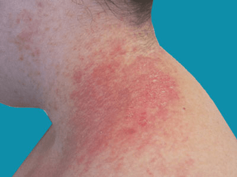

What is Darier’s disease?
It is a rare inherited skin condition, in which the skin in certain areas develops large numbers of small brownish warty bumps.

In the outer layer (epidermis) of normal skin, the skin cells are held together like bricks cemented in a wall.
In Darier's disease the sticky junctions that hold the skin cells together are not made properly, and the skin may become
scaly or lumpy or even form blisters. It is not due to an allergy and it is not contagious (catching).
Yes. It runs in certain families, being inherited in a pattern known as dominant inheritance.
This means that there is a 1 in 2 (50:50) chance that each child of an affected parent will inherit the condition.
It affects both men and women. Its severity may vary considerably within a single family; and if a person is badly
affected it does not necessarily mean that other family members who inherit the condition will also get severe disease.
Itching is very common. The affected skin may smell unpleasant, particularly in moist areas. This is probably caused by increased
numbers of ordinary skin bacteria growing in the affected skin. The appearance of the rash, and its smell, can be embarrassing.
A quarter of patients notice that the condition improves as they get older. Some people find that the sun causes their Darier’s disease
to flare up. Some women notice that it worsens around the time of their periods.
The first signs of the condition usually appear somewhere between the ages of 6 and 20. Little brownish, rough-topped bumps develop
on the skin. The severity of the condition varies a lot and is unpredictable. The rash is often on the chest, neck or upper back at
the start but warty bumps may occur on any part of the body including the skin creases and skin under the breasts. It is unusual
for people to have much trouble on the face except for the skin on the forehead near the hairline.
The fingernails are usually affected. They tend to be rather fragile, split easily and look as if they have been bitten or appear dirty.
There may be very obvious long red or white lines running the length of the nails. Nail changes and/or flat "warts" on the
backs of the hands are often present in childhood, well before there are any other skin changes. Pits or small areas of
hard skin occur on the palms of the hands and less often the soles of the feet. Occasionally there may be small spots
inside the mouth and these may give the roof of the mouth a rough feeling.
The diagnosis can often be made on the appearance of the rash and the fact that it runs in families.
To confirm it, a small sample of skin (a biopsy) can be removed under a local anaesthetic and examined
under the microscope in the laboratory.
No, there is no cure, but there are many ways of helping it.
- MoisturisersEmollients are products used to soften skin. Moisturisers are products used to add moisture to the skin.
There are numerous emollients and moisturisers on sale at general stores and pharmacies. Options include:
- Oils
- Lotions
- Creams
- Ointments
Emollients and moisturisers are most effective when applied immediately after bathing but can also be applied at other times
- Sun protection It is vital to protect skin and eyes from the damaging effect of the sun because exposure to ultraviolet
radiation contributes to ageing skin and is the main cause of skin cancer. Some people may need to take particular care because of photosensitivity.
- Topical retinoidsTopical retinoids are creams, lotions and gels containing one or other of group of medicines derived from Vitamin A.
These compounds result in proliferation and reduced keratinisation of skin cells independent of their functions as a vitamin.
Many brand-name creams containing the retinoids retinol and retinaldehyde can be obtained over the counter at pharmacies and supermarkets.
- Dermabrasion Dermabrasion is a skin resurfacing technique that is used to treat facial scarring. When it was first developed
in the early 1950's it was used predominantly to improve acne scars, chicken pox marks and scars resulting from accidents or disease.
Nowadays, dermabrasion is also used to treat deep facial lines and wrinkles, severe sun damage, pigmentation disorders and certain types of skin lesions.